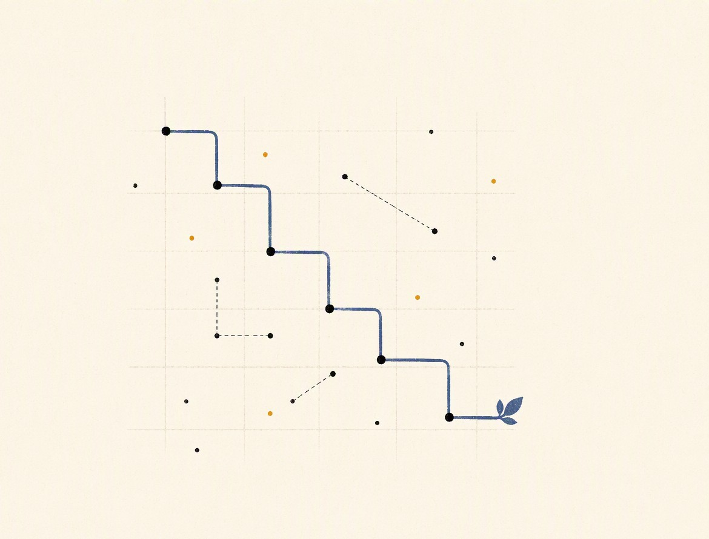
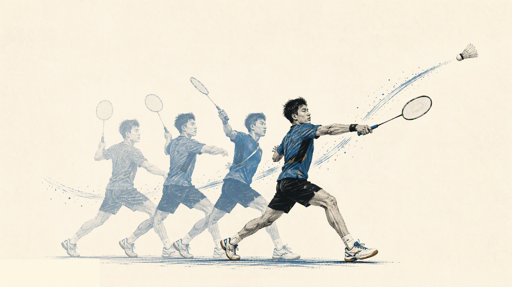

About
I studied Electrical and Electronic Engineering at the University of Southampton, then Artificial Intelligence for Sustainable Development at UCL for my master's. My undergraduate course projects covered sensors, a smart meter and chip design, and outside coursework I was granted two utility-model patents by CNIPA. In my master's dissertation I built a VR driving environment on real map data in Unity, and used multi-objective Bayesian optimisation to tune the eco-driving display separately for sixteen participants.
I am applying to PhD programmes in China for autumn 2027, around reinforcement learning, simulation, and human-in-the-loop learning.

Projects

Sustainable Personalised Driving
A VR driving simulator on real map data; a multi-objective Bayesian optimiser personalises eco-driving displays for sixteen drivers.
View project→
Badminton Stroke Wearable
A wrist-worn device that classifies four stroke types with an SVM (77.37% accuracy) and answers with coach-style feedback.
View project→